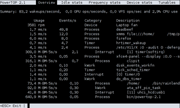
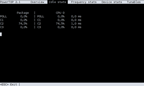
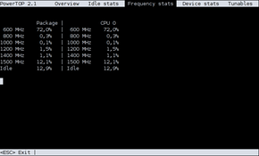
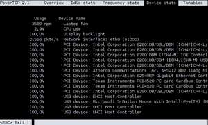
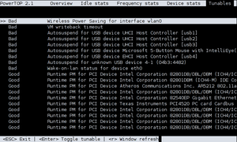

PowerTOP
Dieser Artikel wurde für die folgenden Ubuntu-Versionen getestet:
Ubuntu 14.04 Trusty Tahr
Zum Verständnis dieses Artikels sind folgende Seiten hilfreich:
 PowerTOP
PowerTOP  ist ein Werkzeug für die Kommandozeile, welches den Energieverbrauch des Systems analysiert und darauf basierend Tipps zur Optimierung dauerhaft laufender Rechner gibt oder bei mobilen Computern (Laptops, Netbooks) Vorhersagen zu Akkulaufzeit macht. Die zweite Generation von PowerTOP hat einen komplett neuen Codeunterbau und bietet umfassende Diagnosemöglichkeiten.
ist ein Werkzeug für die Kommandozeile, welches den Energieverbrauch des Systems analysiert und darauf basierend Tipps zur Optimierung dauerhaft laufender Rechner gibt oder bei mobilen Computern (Laptops, Netbooks) Vorhersagen zu Akkulaufzeit macht. Die zweite Generation von PowerTOP hat einen komplett neuen Codeunterbau und bietet umfassende Diagnosemöglichkeiten.
Dieser Artikel behandelt die Version 1.97 oder neuer. Die älteren Versionen bis Version 1.13 werden im Artikel Archiv/PowerTOP bis 11.04 beschrieben.
Installation¶
Folgendes Paket muss installiert [1] werden:
powertop
 mit apturl
mit apturl
Paketliste zum Kopieren:
sudo apt-get install powertop
sudo aptitude install powertop
Benutzung¶
PowerTOP wird im Terminal mit folgendem Befehl gestartet [2]:
sudo powertop OPTIONEN
Das Programm muss – im Gegensatz zur Vorgängerversion – mit Root-Rechten [3] gestartet werden. PowerTOP läuft kontinuierlich und muss explizit mit Esc oder Strg + C beendet werden.
Optionen¶
Beim Programmstart stehen folgende Optionen zur Verfügung:
| Startparameter von PowerTOP 1.97 oder neuer | |
| Option | Beschreibung |
--debug | Debug-Modus aktivieren (nur zur Fehlersuche) |
--version | Anzeige der Version |
--calibrate | startet das Programm im Kalibrierungs-Modus (der Rechner sollte während der Kalibrierung nicht genutzt werden. Dauert bis zu einer Stunde!) |
--extech[=devnode] | einen externen "Extech Power Analyzer" verwenden |
--html[=DATEINAME] | einen HTML-Report erstellen |
--csv[=DATEINAME] | einen CSV-Report erstellen |
--time[=SEKUNDEN] | einen Report für x Sekunden erstellen |
--iteration[=x] | Wie oft jeder Test wiederholt werden soll |
--workload[=DATEINAME] | Datei zur Lasterzeugung |
--auto-tune | Setzt automatisch alle optimierbaren Anpassungen |
--quiet | Die Ausgabe auf stderr unterdrücken |
--help | verfügbare Optionen anzeigen |
Übersicht¶
|  |
| Übersicht |
Nach dem Start kann es etwas dauern, bis alle Daten geladen sind und die Übersicht angezeigt wird. In der ersten Zeile werden die PowerTOP Version und fünf Reiter angezeigt:
Übersicht ("Overview")
Untätigkeits-Statistik ("Idle Stats")
Frequenz-Statistik ("Frequency Stats")
Geräte-Statistik ("Device Stats")
Einstellungen ("Tuneables")
Die anderen Reiter können über die Cursor-Tasten ← und → erreicht werden. Ab Version 2.2 wurde umgestellt: nun verwendet man die Tasten Tab ⇆ und ⇧ + Tab ⇆ .
Unter der Reiter-Auswahl wird bei Akku-Betrieb als erstes die Leistung, die der Akku liefert, angezeigt. Bei Netzbetrieb wird die einzeilige Zusammenfassung von "wakeups/second", "GPU ops/second" und "VFS ops/sec" als erstes angezeigt. Darunter befindet sich die Darstellung der einzelnen Prozesse mit der CPU-Verwendungszeit "Usage" pro Sekunde, mit der Anzahl der Aufwachenvorgänge pro Sekunde "Events/s", der "Category" und der Beschreibung.
Hinweis:
Ab Version 2.0 gibt es im Akku-Betrieb eine Spalte mit der geschätzten Leistungsaufnahme "Power est." in Watt, welche am besten ignoriert wird. Es gibt keine Möglichkeit, die Leistungsaufnahme den einzelnen Prozessen zuzuordnen und die Anzeigen liegen daher teils gravierend neben der Realität.
Leerlauf- und Frequenz-Statistik¶
Auf diesen beiden Reitern wird die Verweildauer des Prozessors in verschiedenen Energiesparmodi (C-States  ) und der Verlauf der Prozessortaktung angezeigt.
) und der Verlauf der Prozessortaktung angezeigt.
|  |
| Untätigkeits-Statistik |
|  |
| Frequenz-Statistik |
|  |
| Geräte-Statistik |
Geräte-Statistik¶
Diese Ansicht zeigt, wie stark ein Gerät ausgelastet ist. Dies kann leicht mit der Bildschirm-Helligkeit getestet werden.
Hinweis:
Die Anzeige der CPU-Auslastung deckt sich nicht mit der anderer Werkzeuge wie dem System Monitor.
Anpassungen¶
In PowerTOP können verschiedene Anpassungen unter "Einstellungen" getestet werden. Mit der Taste ⏎ können die aufgeführten Vorschläge einfach aktiviert ("gut") oder auch wieder deaktiviert ("schlecht") werden. Da die von PowerTOP vorgenommenen Änderungen nicht gespeichert werden können, erzeugt man sich einen HTML-Report, um an die dazugehörigen Befehle zu gelangen:
sudo powertop --html=powertop.html
Empfehlenswert ist eine Aktivierung der eigenen Anpassungen beim Systemstart. Dies kann mit Hilfe eines Shell-Skripts erfolgen, das über die Datei /etc/rc.local gestartet wird. Alternativ kann man die Anpassungen direkt in dieser Datei festlegen.
Eine Umsetzung der PowerTOP-Empfehlungen könnte folgendermaßen aussehen. Es ist zu beachten, dass diese Einstellungsbeispiele unbedingt noch an die eigene Hardware angepasst werden müssen:
|  |
| Einstellungen |
1 2 3 4 5 6 7 8 9 10 11 12 13 14 15 16 17 18 19 20 21 22 23 24 25 26 27 28 29 30 31 32 33 34 35 36 37 38 | #!/bin/bash ## radeon powersave ## echo profile > /sys/class/drm/card0/device/power_method echo auto > /sys/class/drm/card0/device/power_profile ## Kernel ### echo 0 > /proc/sys/kernel/nmi_watchdog echo 0 > /proc/sys/kernel/watchdog ## VM ## echo 5 > /proc/sys/vm/laptop_mode echo 1500 > /proc/sys/vm/dirty_writeback_centisecs ## CPU ## 0 performance 1 powersave echo 1 > /sys/devices/system/cpu/sched_mc_power_savings echo 1 > /sys/devices/system/cpu/sched_smt_power_savings ## SATA Link Power Management ## for i in /sys/class/scsi_host/host[01234]/link_power_management_policy; do echo min_power >$i; done ## Intel Sound ## 30 = 30 s bis zum Standby des Chips. echo Y > /sys/module/snd_hda_intel/parameters/power_save_controller echo 30 > /sys/module/snd_hda_intel/parameters/power_save ## Runtime PM for PCI Device find /sys/bus/pci/devices/*/power -name control -exec echo auto >{} \; for i in $(find /sys/devices/pci0000\:00/0* -maxdepth 3 -name control); do echo auto > $i; done ## USB ## Nicht generell zu empfehlen! Ruckeln bei Mäusen. #for i in /sys/bus/usb/devices/*/power/control; do echo auto >$i; done # Wake on LAN abschalten ethtool -s eth0 wol d exit 0 |
Problembehebung¶
Einstellungen, welche PowerTOP vornimmt, gehen schon beim Anschließen/Entfernen eines USB-Geräts oder der Stromversorgung wieder verloren. Dies betrifft leider auch eigene Anpassungen, die beim Systemstart aktiviert wurden. Dieses Verhalten liegt am Power-Management über die pm-utils. Die Werte werden über die Datei /etc/rc.local (bzw. über sysctl) zwar korrekt gesetzt, aber von pm-utils ereignisabhängig (Akku-/Netzbetrieb) zurückgesetzt. Um das zu verhindern, kann pm-utils störende Hooks deaktivieren.
Beispiel zur Deaktivierung des CPU Schedulers¶
Der Hook /usr/lib/pm-utils/power.d/sched-powersave, der den Wert des CPU-Schedulers verbiegt, kann durch Anlegen einer Dummy-Datei in /etc/pm/power.d/ deaktiviert werden:
sudo touch /etc/pm/power.d/sched-powersave
Im Verzeichnis /usr/lib/pm-utils/ sollten keine Änderungen erfolgen, da diese bei System-Updates überschrieben werden.
Links¶
PowerTOP Users's Guide
- DokumentationPowerTOP 2.0 – Strom sparen unter Linux
- heise Open Source, 06/2011
Weitere Artikel zum Thema:
- Erstellt mit Inyoka
-
 2004 – 2017 ubuntuusers.de • Einige Rechte vorbehalten
2004 – 2017 ubuntuusers.de • Einige Rechte vorbehalten
Lizenz • Kontakt • Datenschutz • Impressum • Serverstatus -
Serverhousing gespendet von